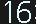

＜藤沢[JT-08] 大 船 戸塚[JT-06]＞



ブラウザによっては表示が滲むことがあります。その場合はブラウザ側の表示倍率を変更(80%推奨,IEは125%→100%)してください。
実際の運行状況には準拠していません。実際の運行状況はこちらから確認してください。（JR東日本のページにリンクします）
モード選択： ダイヤ選択：（自動列車セットモードでのみ動作）
※休日ダイヤにおける踊り子2・12・20号はすべてのダイヤパターンに実装されています。
自動列車選択モードにおける時刻設定
設定時刻：
ランダムに生成するボタン（手動列車選別機能でのみ有効）
大船駅環境音を再生するボタン
○筐体画像切替
筐体の裏を見る(北改札):
下から段を消灯させる
調整中表示：
実際の発車時刻(時分秒)をもとに表示していますが、分単位で同時発車の列車については実際と表示順序が異なる場合があります。
モード選択： 発車1分前通知機能： 発車1分前通知機能についての詳細はこちらをご覧ください。
モード選択： 発車1分前通知機能： 発車1分前通知機能についての詳細はこちらをご覧ください。
現在表示中の列車（上位５本のみ）
| 列車番号 | 路 線 名 | 列車名・直通先 | 発車時刻 | 種 別 | 両数 | 行 先 | のりば | 停車駅パターン |
1682S |
横須賀線 |
16：58 |
普通 |
15両 |
成田空港 |
5番線 |
横須賀線 |
|
3534E |
上野東京ライン |
宇都宮線直通 |
17：00 |
快速アクティー |
15両 |
宇都宮 |
2番線 |
上野東京ライン |
2846Y |
湘南新宿ライン |
高崎線直通 |
17：03 |
快速 |
15両 |
籠 原 |
2番線 |
湘南新宿ライン-快速 |
1626E |
上野東京ライン |
宇都宮線直通 |
17：06 |
普通 |
15両 |
小金井 |
2番線 |
上野東京ライン |
1602S |
横須賀線 |
17：07 |
普通 |
15両 |
上総一ノ宮 |
5番線 |
横須賀線 |


このシミュレーターについて
大船駅南改札 発車標
大船駅北改札 発車標
実際の時刻表データに基づくリアルタイム表示のほかに各ドロップダウンリストから表示を自由に選択できる手動表示が可能となっています。また、手動表示モードでは「ランダムに表示する」ボタン押下により各表示の出現率を実際と近づけた設定でランダムに表示を変更することができます。
その他、駅構内の雰囲気を可能な限り演出するべく大船駅における実際の環境音を再生できるボタンやリアルタイム表示における発車直前通知機能など、様々な機能を盛り込んだ大作(?)となっています。
利用上の注意
このシミュレータはリアルタイム列車情報表示に対応していますが、実際の運行状況とは一切連動していません。そのため突発的な遅れや運休、行先変更、東海道線の横須賀線への経路変更などには一切対応していません。大船駅から電車をご利用の際は当シミュレータに優先して実際の運行情報および実物の発車標をもとに行動することを強くお勧めします。このシミュレータの情報をもとに行動した結果発生した損害などには一切責任を持ちませんので予めご了承ください。
PWAに対応しました。
このシミュレーターはPWA(Progressive Web Apps)に対応しています。スマートフォン(Android)は「ホーム画面に追加」から、PCはアドレスバー右側の「インストール」からそれぞれ導入することでデスクトップやアプリ一覧からネイティブアプリと同じように起動することができます。
細かい仕様について
発車標本体の挙動
発車標の日英切り替え間隔については現地で実測のうえ以下の挙動を設定しており、変更はできません。
実物と同様、「日本語①(6.0秒)→日本語②(6.0秒)→英語①(3.0秒)→英語②(3.0秒)」のサイクルで動作します。
現地で撮影した写真はこちらをご覧ください。
実物と同様、「日本語①(6.0秒)→日本語②(6.0秒)→英語①(3.0秒)→英語②(3.0秒)」のサイクルで動作します。
ランダム表示ボタンについて
このシミュレーターは手動列車選択モードにおいて可能な限り実際の表示と同じような割合でランダムに表示することができるボタンを設置しています。
各行先および種別は実際の表示割合に近づけた排出率を設定しており、線区・種別に応じた行先・停車駅パターン表示を計算して表示しています。また、同じ路線色が3本以上重ならないように調整しています。
◇ランダム設定における列車間隔について◇
ランダム設定時は時間帯によって列車の間隔を同発～12分間隔の幅で調整しています。時間帯別の詳細は下表を参照ください。| 設定時間帯 | 設定列車間隔 |
| ５時台 | ０～１１分間隔 |
| ６時台 | ０～７分間隔 |
| ７時～８時台 | ０～３分間隔 |
| ９時～２０時台 | ０～７分間隔 |
| ２１時～翌４時台 | ０～１１分間隔 |
◇ランダム設定における表示について◇
列車の運行形態とシミュレーター上での表示が一致するように調整し、可能な限り矛盾が生じないようにしています。（例：宇都宮線系統の湘南新宿ラインは全列車普通,特別快速は全列車2番発 など）各行先および種別は実際の表示割合に近づけた排出率を設定しており、線区・種別に応じた行先・停車駅パターン表示を計算して表示しています。また、同じ路線色が3本以上重ならないように調整しています。
キーボード入力について
このシミュレータでは一部の機能をPCのキーボード入力によって操作することが可能です。詳細については下表をご覧ください。
| 操作名 | 入力文字 | 備考 |
| 下0段消灯 | テンキーの"0" | 全段完全表示 |
| 下1段消灯 | テンキーの"1" | 解除時は「下0段消灯」(テンキーの"0")を押下 |
| 下2段消灯 | テンキーの"2" | |
| 下3段消灯 | テンキーの"3" | |
| 下4段消灯 | テンキーの"4" | |
| 下5段消灯 | テンキーの"5" | |
| 下6段消灯 | テンキーの"6" | |
| 下7段消灯 | テンキーの"7" | |
| 下8段消灯 | テンキーの"8" | |
| 下9段消灯 | テンキーの"9" | |
| 全段消灯 | "delete"キー | |
| 調整中表示 | "insert"キー | |
| 自動/手動切替 | "A"キー | |
| ランダム表示 | "R"キー | 手動セット時に有効。 |
| 列車詳細情報画面⇔大宮駅先着列車画面切替 | "T"キー | 自動セット時のみ有効。 |
| 発車1分前通知機能ON/OFF切替 | "F"キー |
自動列車セット機能について
実際の大船駅の時刻表に基づき列車を表示させるプログラムです。つまり、大船駅のコピーそのもの。詳しい仕様等については下記の をご覧ください。現在は8つのデータを収録しています。今後のダイヤ改正や運転変更に合わせ更新を継続していきたいと考えています。
収録ダイヤ：
収録ダイヤ：
- 2020年3月改正平日・土休日ダイヤ(臨時列車運転に応じた6パターン)
- 2020年5月1日実施 新型コロナウイルス感染症拡大に伴う特急列車減便ダイヤ(成田エクスプレスの大幅減便)
大宮駅先着列車表示LCD画面(再現)について
横浜駅にあるディスプレイ(中央北改札)
このシミュレータでは大船駅に実際には存在しないものの、横浜駅に設置されている大宮駅先着列車を表示するディスプレイと同じものを再現しています。こちらも時刻表データに組み込んである大宮駅到着予定時刻をもとに到着順に列車を表示するものとなっています。
発車1分前通知機能について
この機能をオンにすると発車標の最上位にある列車の発車時刻1分前(50~100秒前)になった際に4点チャイム(特急列車は別音源)とともにポップアップウィンドウで該当列車の
※iOS端末では通知音が正常に再生されない事象が報告されています。
なお、公開に先立ち2020年10月14日の1594E(2番線14:31発), 2544Y(5番線14:45発), 1644E(2番線20:04発)において「北改札において通知発出を確認してから通常の速度で歩き、駆け込まずに乗車が可能であるか」を実証したところ、通知発出の確認から乗車に成功した確率はかなり低めでした。現地で撮影した動画はこちらをご覧ください。
・通知発出タイミング試験 2544Y
・通知発出タイミング試験 1644E
- のりば
- 路線名
- 直通先/列車名
- 種別
- 行先
- 両数
※iOS端末では通知音が正常に再生されない事象が報告されています。
なお、公開に先立ち2020年10月14日の1594E(2番線14:31発), 2544Y(5番線14:45発), 1644E(2番線20:04発)において「北改札において通知発出を確認してから通常の速度で歩き、駆け込まずに乗車が可能であるか」を実証したところ、通知発出の確認から乗車に成功した確率はかなり低めでした。現地で撮影した動画はこちらをご覧ください。
・通知発出タイミング試験 2544Y
・通知発出タイミング試験 1644E
シミュレータの動作制御について(開発者向け)
準 備 中
2020年5月8日
およそ3ヶ月ぶりに大船に行き、改めて巨大な発車標に感銘を受ける。5月9日
Shonan.Exp氏より北改札の筐体素材を頂いたので撮りためていた写真からLEDを再現したものと組み合わせてgifアニメーションを作成。思いのほか気に入ってしまったのでそのままノリでシミュレータ化しちゃうことに。5月10日
初期パーツによる最初期のシミュレータが完成。10段すべてが初期設定の17:00発東海道線横浜行きという味気ないものであったが作った当人は大満足。だが、やっぱり大船といえばあの混沌さがメインなのでそれを実現することが最終目標となる。まずは時刻表通りに表示させる機能を付けよう！というド素人にしては夢を高く高く設定し、奮闘するもなかなか思い通りにいかない。そもそも表示が変わらない。
5月10日～21日
思い立っては挫折を繰り返し徐々に創作意欲が落ちていく。5月22日
誕生日なので大船に行く。(←？？？？)改めて実物を目の前にして「やっぱりこれを作りたい！」と奮起。資料をたくさん撮る。5月23日～
再び自動時刻セット機能と奮闘。撃沈。また創作意欲は下り坂。7月4日
日が空いたなおい。忙しかったんです。またShonan.Exp氏より今度は大船駅の環境音素材を頂く。早速実装。より大船感が増す。8月6日
また日が空きました。自身で手掛けるほかのシミュレータから着想を得て「ランダム機能ならいけそう」と思い立ち、1か月ぶりにプログラム本体に手を付ける。で、できたのがこれ(上画像)。1段目の行先だけまずはランダムで変えられるようにしてみたら意外とイイ。やる気が出てくる。
そのままのノリで現在時刻＋数分の値を算出できるようになった。この時点で「時間帯によって列車間隔を変える機能」も同時実装した。そして勢いで全段をランダムでいじれるようにするなどと。
そのまま夜まで奮闘して全段実装。n時部分の繰り上がり実装や日付変更(0時)に対応させるのは非常に苦労した。けどできた。カラフルだけど表示ごとに実際の形態に対応してないのでむやみやたらに表示されている状態。
こんなの大船じゃない！！！！というわけで今後の課題は「ただしいおおふなのつくりかた(仮)」となった。
8月7・8日
課題を設定したものの発想に至らず。朝ラッシュ時の列車間隔だけ見てｷｬｯｷｬしてるだけ。8月9日
のりばパーツの表示状態を参照して他の各表示を表示する手法を思いつき実行してみる。すると今までの乱雑な大船に比べてかなりスッキリと、そしてかなり実物に近づいた大船に。ただ、このままでは「上野東京ライン品川行(停車駅パターン:東海道線横浜行)」のように表示内で矛盾が生じてしまう。「はんぶんただしいおおふな」が完成した今、次の課題は「いかに運行形態と表示を合わせるか」となる。
なお、この構文変更で「各パーツの排出率」という概念が誕生したのでレアな表示はシミュレーター上でもレアにしてみるなどと。
余計な機能かもしれないが、実物に即したものにするために「調整中表示」と「下n段が消える機能」を実装。また、キーボード入力に対応させる。
8月10日
☆ 大 船 ル ー レ ッ ト ☆
くっだらない。
8月11日
排出率の全段実装を終える。8月12日
のりば＋行先パーツの組み合わせを参照する方法を思いついたので早速実践。意外なことに一発で思い通りの挙動をしてくれたので1段目だけだけど実装してみる。これでシミュレータ内の表示が実際の運行形態と完全一致した状態となった。これはもう100%大船そのものである。手元で動く大船を創造してしまったのである。や っ た ね✌
8月13日
これまでの状態だと場合によっては上画像のように極端なまでに偏って表示されることがあり、実態にそぐわない一面があった。
というわけで同じ色が3段以上重ならないように処理することに。これで、これこそが大船そのものの姿に最も近い完成形なのではないだろうか。というわけで紆余曲折を経てv0.00完成。
9月2日
間が空いた。かなり空いた。この間に少しずつ当初からの最終目標である自動列車セット機能の試行錯誤を繰り返していた。そして今日。出先でいきなりいい案が降ってきたので急いで帰宅して6時間かけて構築。最低限の機能(時刻データ参照, 自動進段)を実装できたのでv0.1beta完成。9月5日
朝から晩までフルで作業してようやくコロナ減便ダイヤの実装を終える。9月8日・9日
大船を超える存在を目指して大宮駅先着列車表示ディスプレイの実装に取り掛かる。そして枠組みが完成したところでv0.2betaに移行。9月27日
しばらく手を付けていなかったが1日がかりで平日通常ダイヤを実装。9月29日
かねてからの夢であったPWAに対応させるなどと。ホーム画面に常駐するJT07かっこいいよね？？9月30日
発車前に通知飛ばせば発車標に見とれていても電車に乗り遅れなくて済むのでは？？と思い発車1分前に通知する機能を実装。10月7日
細かい調整を続けながら目立った進捗がないのでモチベを高めるために1ヶ月半ぶりに大船へ行く。あまりにも手元の大船がとっても大船しているので実物を見たときに前ほど感動しなかったのが軽くショック。そして行先の誤植を現地で見つける。10月14日
モチベを上げておきながらほぼ何もしてなかったのでまぁまた大船行くんですよ。とりあえず通知機能のテスト（発車1分前通知発出から電車に間に合うのか）をしてみたが結果は乗れず。無能か。踊り子8号を踊り子10号で登録していました。なおしました。10月17日
3週間ぶりに一日中家にいたのでダイヤデータの軽量化を完成させてようやく休日ダイヤの実装に移る。公開まであと2週間。10月21日
3週連続でまたまた大船に行きました。到着と同時に鶴見新子安間踏切安全確認に伴う遅れが徐々に波及してきていたのでお家芸「時空転移再出現」「唐突の運転変更」をじっくり堪能しましたよっと。そしてブチ上げたモチベで休日減便ダイヤを実装。10月24日
ホリデー快速の取材のためにまたきた。月間通算4度目。10月28日
追加取材のためにまたきた。移住しろ？10月29日
またまた追加取材。ちょうど高崎線不通に伴う直通打ち切りにより上野東京ライン東京行きが誕生したので追加素材として収集。パーツ集
現時点でのパーツ集です。まだまだ増える…かもしれません。

製作協力-Special Thanks-
大船駅発車標シミュレータを製作するにあたり様々なご協力を頂きました。ありがとうございました。
- Shonan.Exp様(@ShonanExpress1)
- 筐体画像や環境音ファイル、素材写真の提供を頂きました。また、iOSにおける動作確認のお手伝いをしていただきました。さらに、各種測定のお手伝いおよび資料提供、現地の案内までもをしていただきました。本当にありがとうございました。
- 上京特快様(@jokyo_sp_rapid)
- プログラム本体における助言を数多く頂きました。本当にありがとうございました。
- たつたあげ様(@tatsuage_LED)
- 無理をお願いして11/7運転のホリデー快速あたみにおける発車標の挙動を調査していただきました。ありがとうございました。
更新履歴
・2020.08.13 Ver.0.00完成
・2020.09.02 Ver.0.1betaに移行(自動列車選別機能の仮追加)
・2020.09.09 Ver.0.2betaに移行(大宮駅先着列車表示機能の仮追加)
・2020.09.28 Ver.0.3に移行(大宮駅先着列車表示機能の完成)
・2020.09.29 Ver.0.3.2（PWA対応[0.3.1], 通知機能実装[0.3.2]）
・2020.09.30 Ver.0.3.3（通知音実装）
・2020.10.01 Ver.0.3.4（軽微な修正・キーボード操作拡充・iPhoneにおけるPWA正式対応）
・2020.10.16 Ver.0.3.7（行先誤植の修正・筐体裏返し機能の実装・ダイヤ判定軽量化）
・2020.10.21 Ver.0.3.10（軽微な修正・休日減便ダイヤ実装）
・2020.10.22 Ver.0.3.12（緊急の修正）
・2020.10.24 Ver.0.3.13（時計用LED部分の色味を実物と同じ白色LEDふうに調整）
・2020.10.28 Ver.0.3.17（ダイヤ追加・プログラム微修正・各種調整）
・2020.11.01 Ver.1.0.0 本公開開始！
・2020.11.08 Ver.1.1.0 （任意の現在時刻を設定する機能を実装）
・2020.11.21 Ver.1.1.1 （ダイヤ2種追加）
・2020.09.02 Ver.0.1betaに移行(自動列車選別機能の仮追加)
・2020.09.09 Ver.0.2betaに移行(大宮駅先着列車表示機能の仮追加)
・2020.09.28 Ver.0.3に移行(大宮駅先着列車表示機能の完成)
・2020.09.29 Ver.0.3.2（PWA対応[0.3.1], 通知機能実装[0.3.2]）
・2020.09.30 Ver.0.3.3（通知音実装）
・2020.10.01 Ver.0.3.4（軽微な修正・キーボード操作拡充・iPhoneにおけるPWA正式対応）
・2020.10.16 Ver.0.3.7（行先誤植の修正・筐体裏返し機能の実装・ダイヤ判定軽量化）
・2020.10.21 Ver.0.3.10（軽微な修正・休日減便ダイヤ実装）
・2020.10.22 Ver.0.3.12（緊急の修正）
・2020.10.24 Ver.0.3.13（時計用LED部分の色味を実物と同じ白色LEDふうに調整）
・2020.10.28 Ver.0.3.17（ダイヤ追加・プログラム微修正・各種調整）
・2020.11.01 Ver.1.0.0 本公開開始！
・2020.11.08 Ver.1.1.0 （任意の現在時刻を設定する機能を実装）
・2020.11.21 Ver.1.1.1 （ダイヤ2種追加）
Version 1.1.1.14